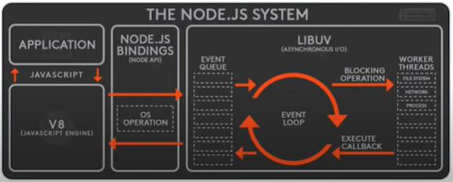

NODE FIRESHIP BASICS
Links
//WHAT IS NODE JS
RUNTIME TO Run Javascript in a Server. It was originally designed for Client side / web browser.
2009 Way to write Javascript in a server
How it works
Visits a URL in the internet that points to your server
When the request is received we can use node to handle it and read a file and send a response to the Client
Node version manager
to use specific versions
// RUNTIME
NOde has different identifiers
Globals:
console
global
process
//EVENTS
process.on('exit', function(){
})
const {EventEmitter} = require('events');
const eventEmitter = new EventEmitter();
eventEmitter.on('lunch', ()=> {
console.log('yum ')
})
eventEmitter.emit('lunch');
Put intensive operations on a separate threads, that is why it is name non blocker

//FILE SYSTEM
const {readFile, readFileSync} = require('fs');
const txt = readFileSync('./text.txt', 'utf8');
readFile('./text.txt', 'utf8'. (err,txt)=> {
console.log(txt); //this will be executed after the console log belog
});
console.log('Do this asap')
//WITH PROMISES
const {readFile} = require('fs').promises;
async functon hello(){
const file = await readFile('./text.txt', 'utf8');
}
//MODULES AND NPM
require()
ES Modules import/export syntax
npm init -y //To create a package in your project
Nodo modules directory, do not touch
//DEPLOY TO THE CLOUD
Google Cloud App Engine
Server in the cloud that scales
Need a google cloud platform account and google cloud command tools installed
In your coude, create Yaml file
Runtime: nodejs12
gcloud app deploy